| Họ và tên / MSSV | Vũ Tùng Minh – SE201043 |
| Lớp | AS2105 – LOS201 Embedded Linux Systems |
| Ngày thực hiện | 17/10/2026 |
| Target | ARMv7-A Cortex-A9 – QEMU vexpress-a9, 2 vCPU, 512 MB, Linux 5.15.0 |
| Kernel target | 5.15.0 + CONFIG_POSIX_MQUEUE=y, CONFIG_HIGH_RES_TIMERS=y, CONFIG_HZ_1000=y |
| Toolchain / host | arm-linux-gnueabihf-gcc 11.4.0; CachyOS x86_64 + Ubuntu 22.04 container (Podman); QEMU 6.2.0; Valgrind 3.18.1; strace 5.16; perf 5.15; GDB 12.1 |
sms_app [-i -t -h -d -v -s -o -j]
│
┌─────────▼─────────┐ open driver / ioctl interval / mq_open /
│ INIT │ cb_init / lq_init / mlockall / setrlimit
└─────────┬─────────┘
error │ │ ok: create 4 threads
▼ ▼
┌──────────┐ ┌──────────────────────────────┐
│ EXIT≠0 │ │ RUNNING │◄──┐ samples, alerts,
└──────────┘ │ (sleep loop, 1 s granularity)│ │ logs flow
└──────────────┬───────────────┘ │
SIGINT/SIGTERM hoặc hết -d │ │
▼ │
┌───────────────────────────┐ │
│ SHUTDOWN │───┘ (until joined)
│ stop=1; cb/lq_shutdown; │
│ join 4 threads; mq_close │
│ unlink; jitter report; │
│ close(fd); summary │
└─────────────┬─────────────┘
▼
EXIT = 0
malloc/free trong vòng lặp nóng ⇒ không phân mảnh heap, không rủi ro leak, độ phức tạp O(1) cho push/pop, hành vi dự đoán được trong hệ thống RT. Linked list sẽ cấp phát động mỗi mẫu, gây jitter do malloc và tăng nguy cơ leak.mq_send/mq_receive với hàng đợi có biên và độ ưu tiên message. Shared memory thuần sẽ phải tự xây cơ chế đồng bộ và báo hiệu, dễ sai. Mqueue là message-oriented nên khớp tự nhiên với ngữ nghĩa "mỗi alarm là một message có kiểu + giá trị".log_queue biến ghi log thành bất đồng bộ: producer chỉ lq_push (O(1)), còn ghi đĩa/flush/rotate do một thread riêng lo. Đây là mô hình producer-consumer kinh điển để bảo vệ deadline.| Shared data | Thread ghi | Thread đọc | Cơ chế bảo vệ |
|---|---|---|---|
CircularBuffer (items/head/tail/size) | Sensor | Processor | cb->mutex + not_empty/not_full |
log queue items/head/tail/size | Sensor, Processor, Alert | Logger | lq->mutex + not_empty |
total_samples, total_alerts[] | Processor, Alert | main (summary) | stats_mutex |
alarm_mq | Processor (mq_send) | Alert (mq_timedreceive) | kernel mqueue (nguyên tử, có biên) |
stop | signal handler / main | mọi thread | volatile sig_atomic_t + barrier cond broadcast |
Bốn điều kiện Coffman cần cho deadlock: mutual exclusion, hold-and-wait, no preemption, circular wait. Trong SMS, không thread nào giữ đồng thời hai lock: mỗi vùng găng chỉ lock đúng một mutex (cb->mutex hoặc lq->mutex hoặc stats_mutex) rồi unlock trước khi thực hiện thao tác cần lock khác. Vì vậy không tồn tại cạnh "hold-and-wait" giữa hai lock ⇒ đồ thị cấp phát tài nguyên (Resource Allocation Graph) không thể có chu trình ⇒ không deadlock. Khi cần gửi message trong lúc đang giữ lock, code cố tình copy ra biến cục bộ rồi mới gọi mq_send sau khi unlock, đảm bảo thứ tự lock là tuyến tính (mỗi thread chỉ một lock tại một thời điểm).
int stop; và signal handler ghi stop = 1. Trình biên dịch có thể giữ stop trong thanh ghi ở vòng lặp Sensor nên thread không bao giờ thấy thay đổi ⇒ chương trình không thoát sạch. Sửa: đổi thành volatile sig_atomic_t stop; và đánh thức các thread đang block bằng broadcast cond (vì cond/ mqueue không tự biết cờ dừng).AlarmMsg có 4 byte padding giữa int type và double value; mq_send() gửi cả sizeof(msg) nên Valgrind báo “Syscall param mq_timedsend(msg_ptr) points to uninitialised byte(s)” (159 lỗi). Sửa: memset(&msg, 0, sizeof(msg)) trước khi điền trường ⇒ Valgrind sạch 0 lỗi.O_NONBLOCK để sender không block, đầu nhận mq_timedreceive() trả EAGAIN ngay khi rỗng khiến Alert Thread quay nóng 2,14 triệu lần trong 20 s. Sửa: khi EAGAIN thì nanosleep(20 ms) rồi thử lại ⇒ giảm ~2000 lần số syscall (xem Mục 4).Driver sms_sensor.ko đăng ký char device /dev/sms_sensor major 242, tạo /proc/sms_stats và hỗ trợ ioctl SMS_SET_INTERVAL. Ứng dụng mở device bằng open() (đường dẫn từ #define), cấu hình interval khớp tham số -i, xử lý EAGAIN bằng retry và đóng fd khi shutdown. Kết quả 60 s với -i 500:
| Chỉ số | Trước chạy | Sau chạy 60 s | Kỳ vọng đề bài |
|---|---|---|---|
read_count (/proc/sms_stats) | 0 | 120 | ≈120 (±10) |
min_interval_ms | 100 (mặc định) | 500 (do ioctl) | khớp -i |
| samples processed | – | 119 | – |
| buffer overflow | – | 0 | 0 |
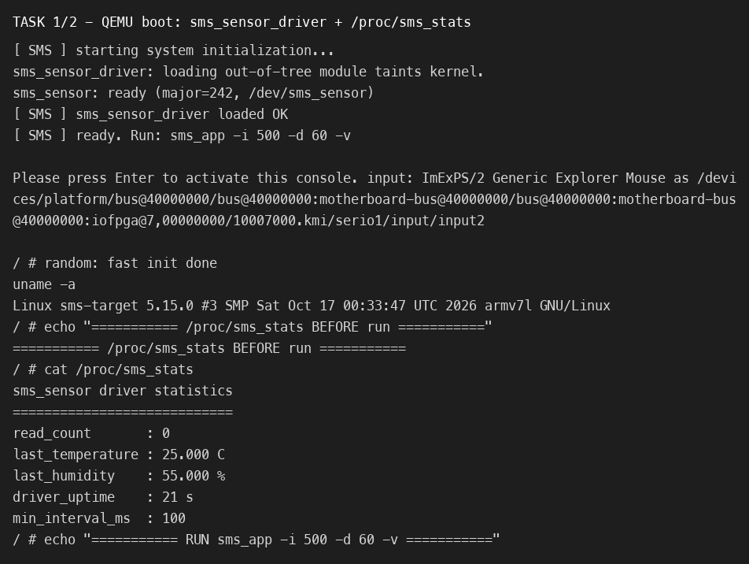
sms_sensor_driver.ko, đăng ký /dev/sms_sensor (242,0) và /proc/sms_stats hiển thị thống kê trước khi chạy.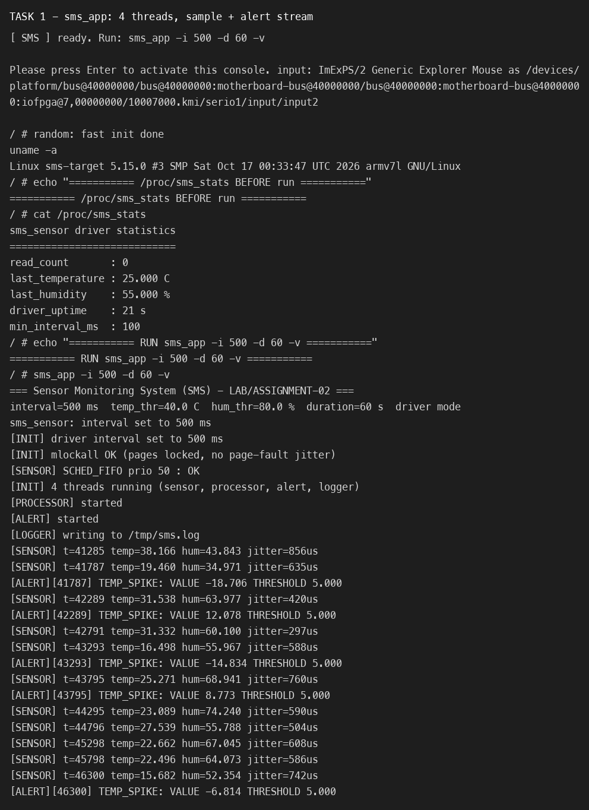
sms_app -i 500 -d 60 -v – 4 thread khởi động, Sensor đọc mẫu và in jitter, Alert in cảnh báo TEMP_HIGH/HUMID_HIGH/TEMP_SPIKE ra stderr.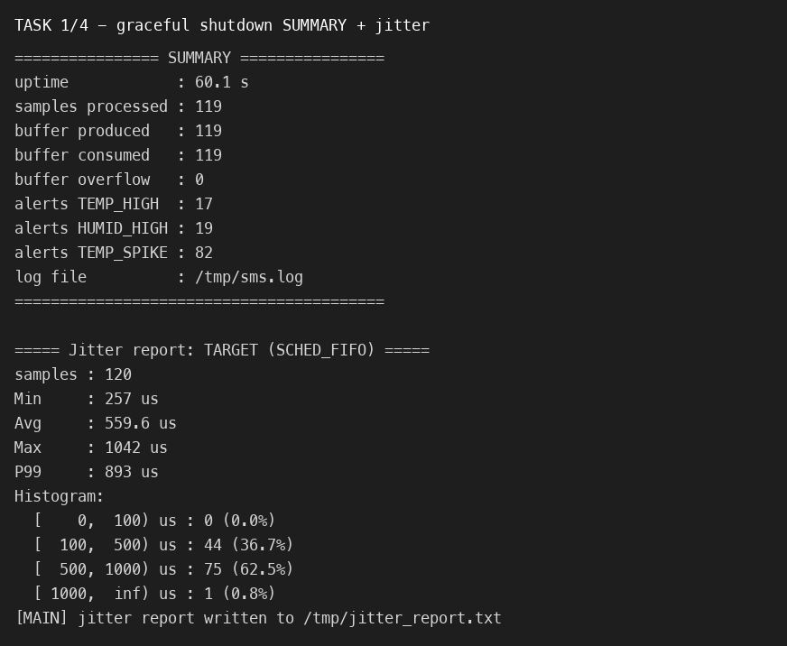
/proc/sms_stats sau chạy xác nhận read_count = 120.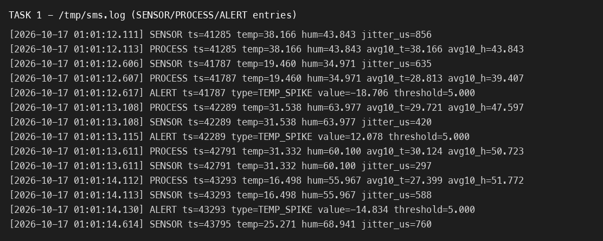
/tmp/sms.log do Logger Thread tạo – mỗi dòng có timestamp đầy đủ và entry từ cả ba nguồn SENSOR/PROCESS/ALERT.Đặt breakpoint trong Processor và Alert thread, chạy với --sim, quan sát trạng thái tất cả thread và các biến của circular buffer. Session xác nhận mỗi thread đang block đúng chỗ đồng bộ: sensor ngủ trên clock_nanosleep, processor chờ cond not_empty trong cb_pop, logger chờ lq_pop, alert trong mq_timedreceive.
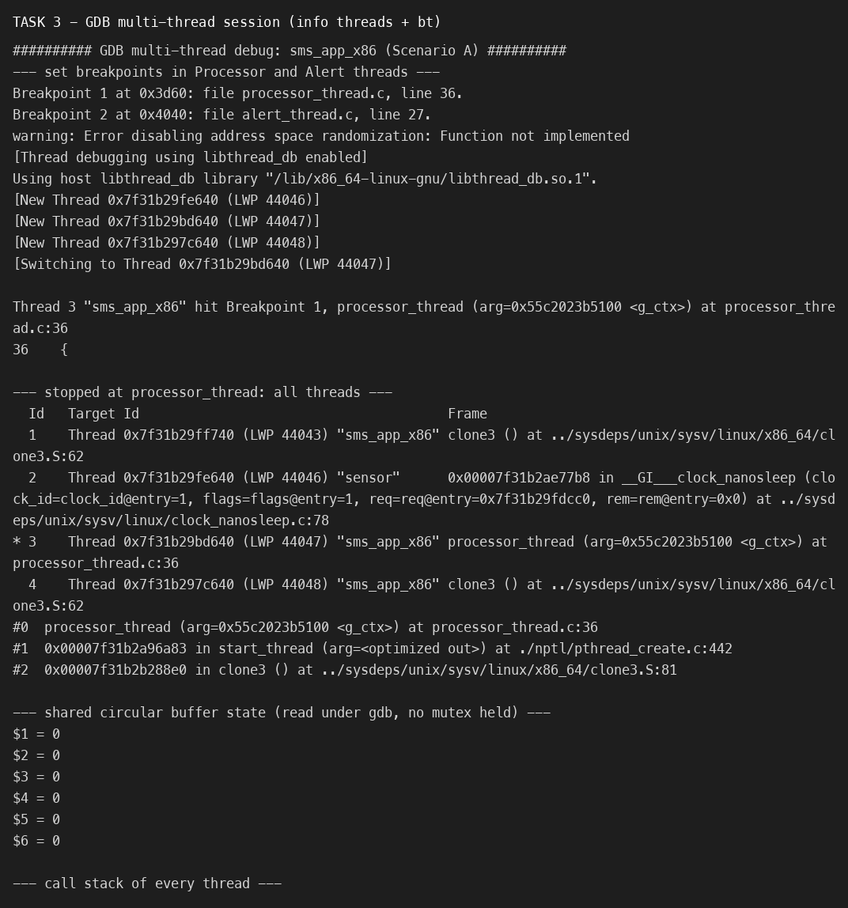
info threads + thread apply all bt; con trỏ buffer head/tail/size đọc trực tiếp từ g_ctx.Chạy bản x86_64 (--sim) dưới memcheck 30 s:
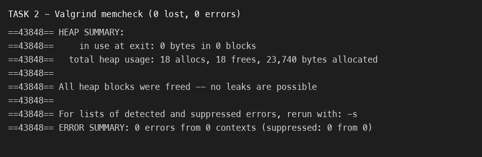
definitely/indirectly lost.strace -f -c trong 20 s. Trước tối ưu, syscall trội là mq_timedreceive với 2.143.153 lần (busy-poll). Sau khi sửa, còn 1058 lần – ứng dụng chuyển từ thiên I/O/bận sang chờ đúng cách.
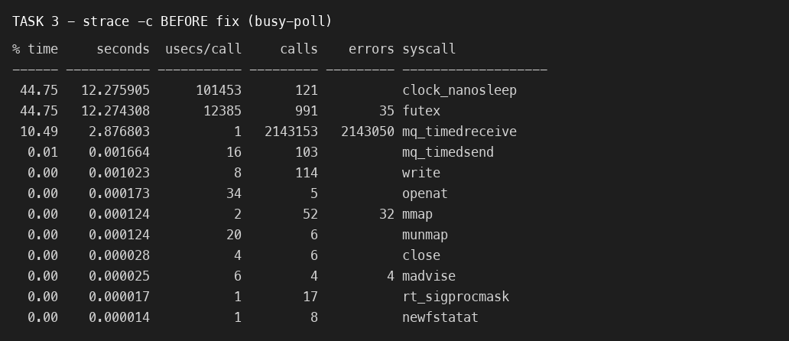
mq_timedreceive 2,14M call, CPU gần 1 core.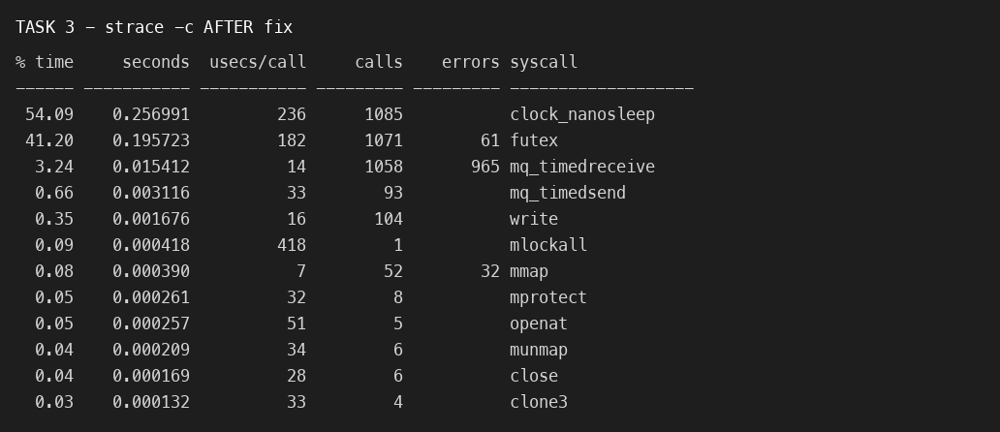
clock_nanosleep/futex chiếm thời gian, mq_timedreceive chỉ còn 1058 call.perf record --all-user -g trên host rồi perf report. Trước tối ưu, thread alert chiếm phần lớn CPU: ~30% trong __vdso_clock_gettime và ~19% trong mq_timedreceive – đúng dấu hiệu quay nóng do O_NONBLOCK. Sau khi thêm nanosleep khi EAGAIN, perf stat cho thấy task-clock giảm từ 15.003 ms xuống 62 ms cho cùng thời lượng 15 s (0.987 → 0.004 CPU).
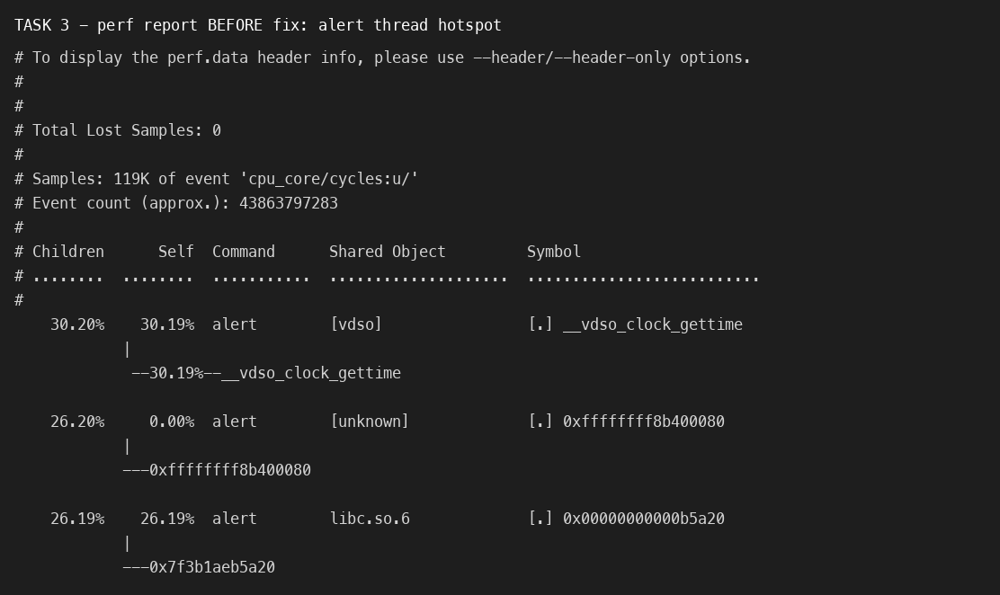
clock_gettime + mq_timedreceive).Chạy hai lần, mỗi lần -i 200 trong 60 s (≥1000 mẫu), khác nhau ở cờ -o (SCHED_OTHER). Sensor Thread dùng clock_nanosleep(CLOCK_MONOTONIC, TIMER_ABSTIME), đo actual − expected mỗi chu kỳ.
| Chỉ số | SCHED_FIFO (prio 50) | SCHED_OTHER (CFS) | Cải thiện |
|---|---|---|---|
| Samples | 1051 | 1051 | – |
| Min latency | 109 µs | 143 µs | −24% |
| Avg latency | 162.2 µs | 292.1 µs | −44.5% |
| P99 latency | 286 µs | 441 µs | −35.1% |
| Max latency | 431 µs | 533 µs | −19.1% |
| Histogram <500 µs | 100.0% | 99.9% | – |
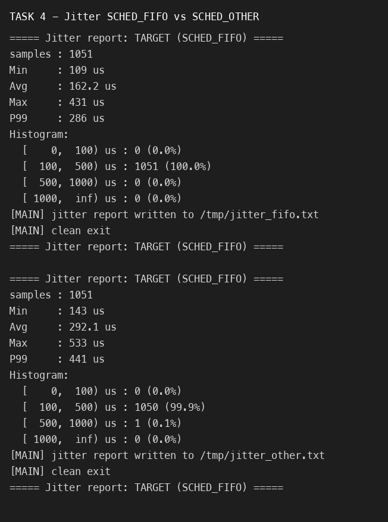
-o = SCHED_OTHER.)Có. Ở P99, jitter giảm từ 441 µs xuống 286 µs (~35%); trung bình giảm ~44%. Nguyên nhân: Sensor Thread FIFO luôn được đưa lên chạy trước các thread CFS (processor/alert/logger) khi thức giấc, nên ít bị trễ do tranh CPU; CFS chia sẻ CPU công bằng nên thread lấy mẫu phải chờ khi các thread khác đang chạy.
Với cảm biến công nghiệp chu kỳ 500 ms, sai số cho phép thường ≤ vài % chu kỳ, tức khoảng < 5 ms (nhiều hệ thống còn yêu cầu < 1 ms). Kết quả FIFO có Max 431 µs và P99 286 µs – đạt ngưỡng < 5 ms một cách thoải mái và cả < 1 ms.
isolcpus / cpuset) để không bị các task khác chen vào.HZ/dùng hrtimer (đã bật HIGH_RES_TIMERS + HZ=1000).printf trong Sensor khi verbose, ưu tiên biến atomic thay vì lock, dùng mlockall (đã làm) để tránh page fault.Chạy sms_app -i 500 -d 120 trong QEMU, đọc /proc/PID/status tại T=5 s, 30 s, 55 s và /proc/PID/maps.
| Chỉ số | T = 5 s | T = 30 s | T = 55 s | Xu hướng |
|---|---|---|---|---|
| VmSize | 3 648 kB | 3 648 kB | 3 648 kB | không đổi |
| VmRSS | 2 536 kB | 2 536 kB | 2 536 kB | không tăng (no leak) |
| VmData | 2 128 kB | 2 128 kB | 2 128 kB | không đổi |
| Threads | 5 | 5 | 5 | main + 4 worker |
RSS phẳng suốt thời gian chạy chứng minh circular buffer (cấp phát 64 slot một lần) và log queue (128 slot cố định) không phình theo thời gian – khớp với kết quả Valgrind 0 byte lost.
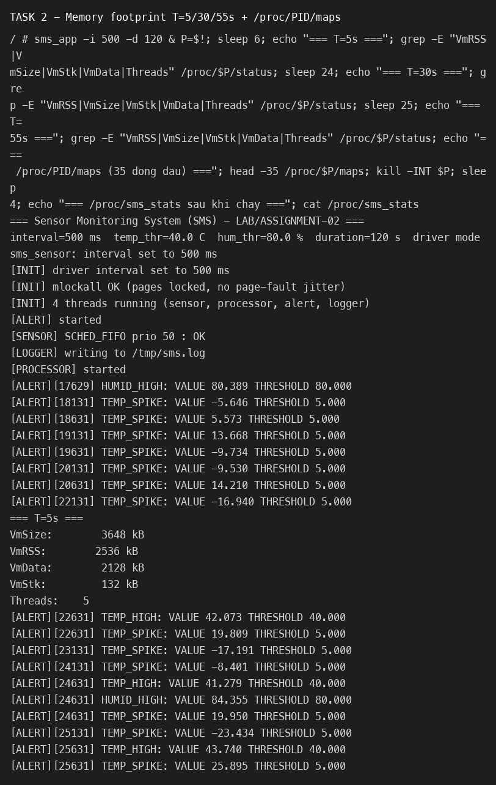
/proc/PID/maps.Giải thích các vùng trong maps (ứng dụng static nên không có shared libs):
00010000-00083000 r-xp /usr/bin/sms_app – text (mã máy).00093000-00095000 r--p /usr/bin/sms_app – rodata (hằng, chuỗi).00095000-00097000 rw-p /usr/bin/sms_app – data + bss (biến toàn cục g_ctx).00097000-00188000 rw-p [heap] – heap (các cấp phát nhỏ, buffer libc).76e8f000-…-76f92000 – 4 thread stack (mỗi stack 256 kB + 1 guard page ---p), tương ứng sensor/processor/alert/logger.7ea78000-7ea99000 [stack] – stack của main; [vdso]/[vvar]/[sigpage]/[vectors] – vùng nhân hỗ trợ syscall/signal.Khó nhất là đồng bộ hóa nhiều thread và đảm bảo shutdown sạch: một thread đang block trên condition variable sẽ không tự biết cờ stop đã bật. Ban đầu chương trình treo ở pthread_join vì Processor/Logger vẫn nằm trong pthread_cond_wait. Tôi giải quyết bằng cách thêm hàm cb_shutdown()/lq_shutdown() broadcast cho mọi waiter, và cho Alert Thread dùng mq_timedreceive với timeout để định kỳ kiểm tra cờ dừng. Đây là bài học về việc thiết kế "wake-up path" ngay từ đầu chứ không phải thêm sau.
Tôi sẽ dùng eventfd + epoll hoặc một "shutdown pipe" để đánh thức đồng loạt thay vì broadcast từng cấu trúc, và tách rõ driver abstraction layer (một interface sensor_source) ngay từ đầu để chế độ --sim không cần rẽ nhánh trong vòng lặp. Tôi cũng sẽ thêm unit test cho circular buffer (đẩy/pop đồng thời) và dùng perf ngay từ khi viết thay vì phát hiện busy-poll muộn.
Đọc và gỡ lỗi ở tầng hệ thống: dùng dmesg/strace/perf//proc để lần ra nguyên nhân thay vì đoán; cùng với quản lý đồng bộ và vòng đời tài nguyên trong đa luồng. Đây là những thứ xuất hiện hàng ngày khi phát triển firmware dịch vụ chạy dài.
Thêm publish MQTT/HTTP để đẩy dữ liệu cảm biến ra dashboard, và lưu cấu hình/ngưỡng xuống JFFS2 trên NAND để giữ cấu hình qua reset (tái dùng kiến thức MTD/JFFS2 của LAB-02). Ngoài ra có thể thêm adaptive sampling: khi phát hiện bất thường thì tự giảm chu kỳ lấy mẫu để bám sát hiện tượng.